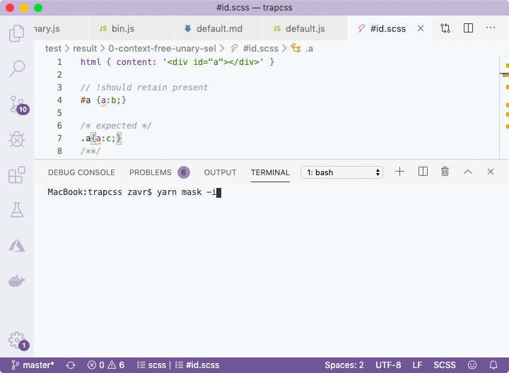

###! Interactive Mode

If the test was failing, _Zoroaster_ would use string comparison algorithm to present where the error was in color. Let's imagine we entered our expected value incorrectly:

```scss
// !should retain present
#a {a:b;}

/* expected */
.a{a:c;}
/**/
```

The error will be shown using color highlighting in the CLI. Moreover, it's possible to run _Zoroaster_ in *interactive* mode with the `-i` flag that will tell the testing framework that we want to interact with it to update mask results in place if errors were found, as demonstrated below.

<p>
  
</p>

The default option is to update, but more info can be shown if `d` is pressed, or no updates are made if anything else is passed, in which case the test suite will fail. This is a useful method for quickly drafting new inputs with empty outputs, running interactive mode on them, and populating mask files with outputs, that can then be changed manually or kept as is for more robust regression testing.

</div>